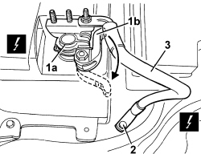

5530B22 BATTERY EARTH LEAD - R+R
- Path
- Procedures > 55 ELECTRICAL EQUIPMENT > 5530 CURRENT GENERATION > 5530B BATTERY AND LEADS > 5530B22 BATTERY EARTH LEAD - R+R
- Kind
- repair procedure (removal / refitting; the operation number is the code)
- Applies to
- all engines; all production periods
- Interactive page
- https://sloeber94.github.io/elrnDB/#/939011012
Applies to: all engines; all production periods
 Removing
Removing
 Refitting
Refitting- Open the bonnet.
1. Disconnect the negative terminal (1a) from the battery after having loosened it by rotating the cam lever (1b).
Description | Component |
|---|---|
BATTERY |
2. Undo the bolt and disconnect the electrical connection from the bodyshell.
Description | Component |
|---|---|
BATTERY EARTH ON BODYSHELL |
3. Keep the battery earth lead.

Applies to: all engines; all production periods
Refitting
Removing- Check that the battery earth lead is not damaged and test the electrical continuity.
- Position the electrical connection on the bodyshell and secure it using the bolt.
Component | Fastening | dia | Value (daNm) | Validity |
|---|---|---|---|---|
BATTERY EARTH LEAD | Bolt | M8x16 | 1.2 ÷ 1.8 |
- Place the negative battery terminal in position, then secure it using the cam lever.
- Close the bonnet.
- Test the operation of the electrical system.